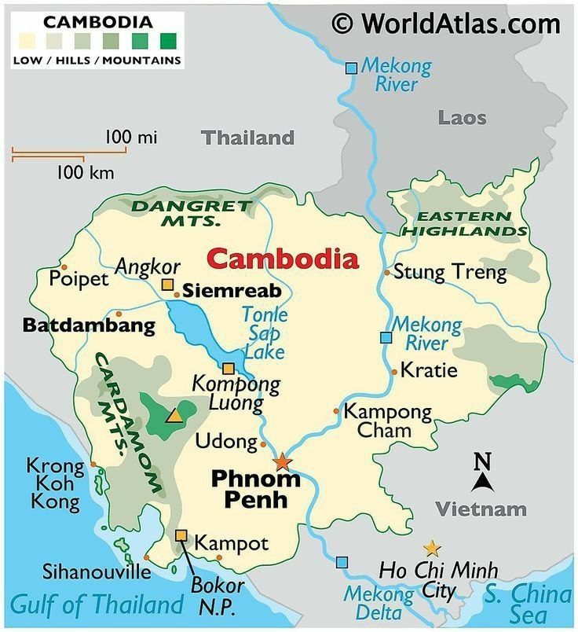

Cambodia's historical landscape is dominated by the monumental ruins of the Khmer Empire, particularly the world-renowned Angkor Archaeological Park. Beyond these ancient temples, the country also preserves significant sites from its French colonial era and sobering memorials from the Khmer Rouge regime in the late 20th century